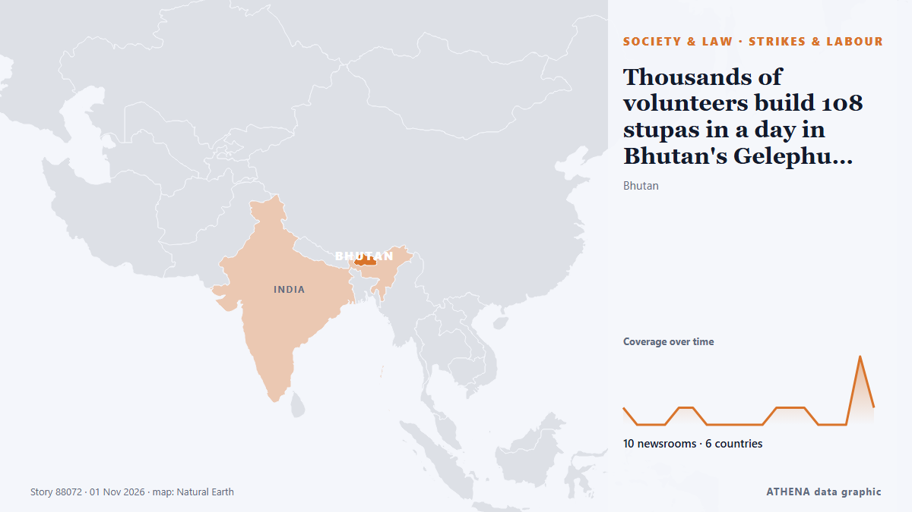

Huelgas y trabajo
| 20 oct | 0 |
|---|---|
| 21 oct | 0 |
| 22 oct | 0 |
| 23 oct | 0 |
| 24 oct | 0 |
| 25 oct | 0 |
| 26 oct | 1 |
| 27 oct | 1 |
| 28 oct | 4 |
| 29 oct | 3 |
| 30 oct | 5 |
| 31 oct | 2 |
| 1 nov | 0 |
| 2 nov | 0 |
Los titulares se muestran en inglés, tal como se publicaron.

Thousands of volunteers build 108 stupas in a day in Bhutan's Gelephu Mindfulness City
Buddhist masters have gathered in Gelephu, Bhutan, to witness the construction of 108 stupas in a single day. de ABC News (International)
Flanked by CM and state BJP chief, Hardeep Puri files nomination for Rajya Sabha bypoll from Madhya Pradesh
Puri’s term as a Rajya Sabha MP from UP is set to end in Nov. de Hindustan Times
Europeans and Canadians set to get more opportunities to move across Atlantic
The European Union and Canada are set to announce on Friday a new strategic alliance that will include more opportunities for Canadians and Europeans to live and study and work on the opposite side… de The Local Switzerland
Strike Threat at Los Angeles, Long Beach Ports Delayed as Union and Employers Extend Talks
A potential strike threatening operations at some of the busiest container terminals in the United States has been pushed back after the Pacific Maritime Association (PMA) and the International… de gCaptain
Berri warns against ending UNIFIL's mission in meeting with German minister
Speaker Berri warned Thursday of the danger of ending UNIFIL's mission before Resolution 1701 is fully implemented and Israeli forces completely withdraw from southern Lebanon. de Naharnet
Seafarers’ and Railway Workers’ Strikes Disrupt Public Transport in Greece
Teachers and civil servants are joining seafarers in their planned work stoppage and protests on Friday across several Greek cities. de to vima
EU to slap new €2 fee on online shopping orders from outside Europe
The EU will charge an extra €2 "processing fee" on parcels imported into the European Union from Sunday November 1st in a bid to reduce the influx of cheap Chinese products bought on the internet. de The Local Austria
Who gets paid when the credits roll
Punjab plans royalty law to protect film professionals. de Express Tribune
Jack Chambers: Government to seek productivity reforms in public sector pay talks
'There will be proposals around reform and productivity, and they’ll be discussed, and hopefully agreed between all sides, as well as agreement on a wider public sector pay deal itself' de Irish Examiner
N70,000 transport allowance divides NLC, TUC
The Federal Government will pay workers a N70,000 monthly transport allowance for six months, beginning in November 2026, to cushion the effects of economic challenges. de Daily Trust